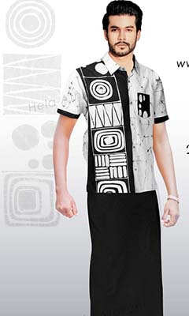

Handloom textiles
The handloom weaving industry in Sri Lanka has a long history and produces a broad variety of textiles, including saris, sarongs, shawls, and other clothing. These handwoven textiles, which frequently include superb craftsmanship and age-old designs, are created from cotton, silk, or a combination of natural fibers.
Where to find handloom textiles in Sri Lanka: Handloom textiles, like batik, are available at regional markets, gift shops, and artist communities. Visits to weaving-historical cities and villages like Kandy, Galle, and Hikkaduwa can provide a greater understanding of the craftsmanship underlying these fabrics.
|  |
Batik
The ancient craft of batik uses wax and dye to create intricate patterns on fabric. Sri Lankan batik is recognized for its vibrant colors and unusual designs, many of which include natural themes or classic motifs. Batiks need considerable labor and skilled workmanship to create.
In Sri Lanka, where can one find batik? Batik products are available all around the country in places like local markets, artisan shops, and artist groups. Some popular places to seek for genuine batik goods include the following:
---------------------------------------------------------------------------------------------------------------------------------------------------------------------------
Location For Shop If you need To Buy.